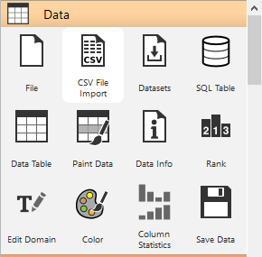
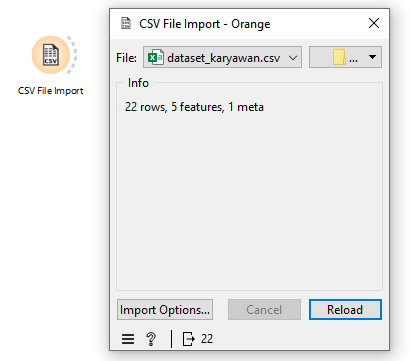
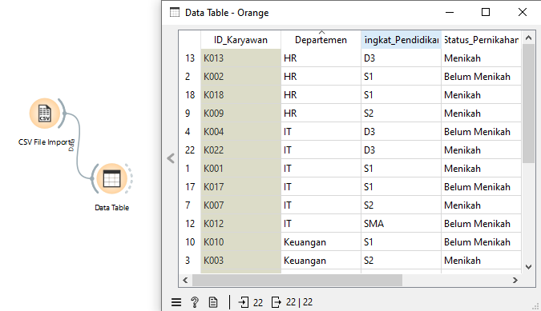
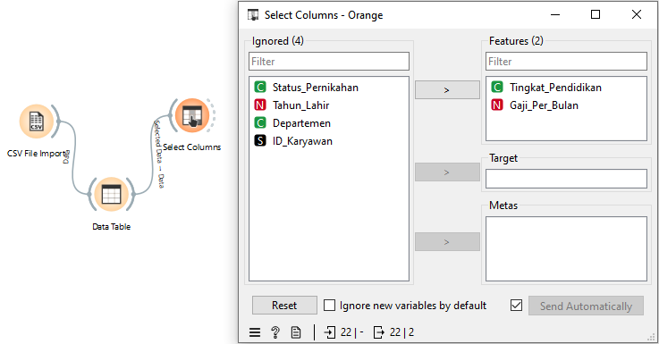
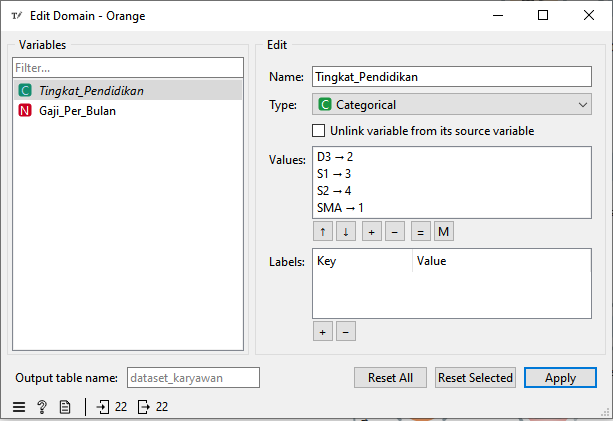
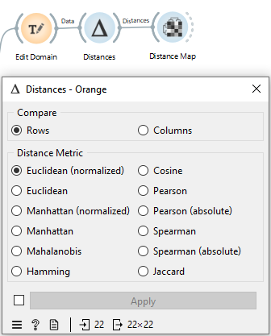
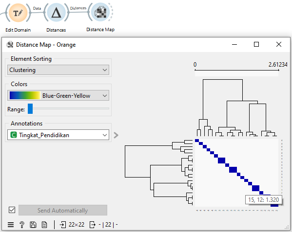
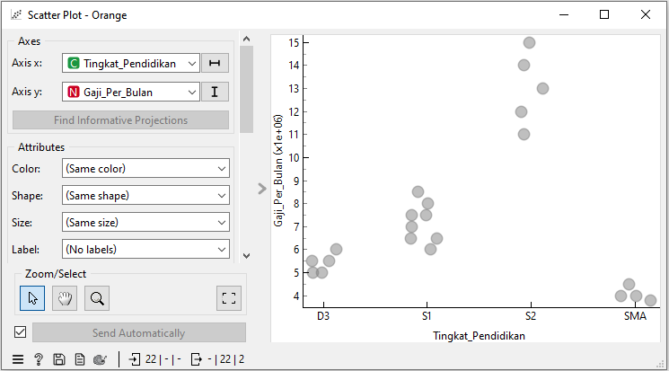

Menghitung Jarak#
Pendahuluan#
Dalam tugas ini, konsep menghitung jarak (distance) tidak merujuk pada jarak fisik seperti meter atau kilometer, melainkan pada jarak antar data (data distance) dalam konteks data mining.
Jarak ini digunakan untuk mengetahui:
Seberapa mirip dua data
Seberapa berbeda dua data
Semakin kecil nilai jarak → data semakin mirip
Semakin besar nilai jarak → data semakin berbeda
Konsep ini sangat penting dalam analisis data seperti:
Clustering (pengelompokan)
Similarity analysis
Machine learning
Konsep Dasar Jarak dalam Data#
Setiap baris data dapat dianggap sebagai titik dalam ruang (space).
Contoh:
Sumbu X → Tingkat Pendidikan
Sumbu Y → Gaji Perbulan
Sehingga satu data bisa direpresentasikan sebagai koordinat:
Contoh:
SMA (1), Gaji 4 juta → (1, 4)
S1 (3), Gaji 8 juta → (3, 8)
Dengan demikian, kita bisa menghitung jarak antar titik menggunakan rumus tertentu.
Contoh Perhitungan Jarak (Euclidean Distance)#
Misalnya terdapat dua data:
Pendidikan |
Gaji |
|---|---|
SMA (1) |
4 |
S1 (3) |
8 |
Langkah perhitungan:
Hitung selisih tiap fitur:
Pendidikan = 3 - 1 = 2
Gaji = 8 - 4 = 4
Gunakan rumus Euclidean Distance:
[ d = \sqrt{(x1 - x2)^2 + (y1 - y2)^2} ]
[ d = \sqrt{(2)^2 + (4)^2} = \sqrt{20} ]
Hasil ini menunjukkan tingkat perbedaan antara dua data tersebut.
##️ Implementasi di Orange Data Mining
Dalam praktik menggunakan Orange Data Mining, proses menghitung jarak dilakukan melalui beberapa tahapan workflow.
Langkah-langkah Workflow#
1. Import Data (CSV File)#
Gunakan widget File
Pilih file dataset (CSV)
Dataset berisi data karyawan seperti:
ID
Departemen
Tingkat Pendidikan
Status Pernikahan
Tahun Lahir
Gaji Perbulan


2. Menampilkan Data (Data Table)#
Hubungkan widget File → Data Table
Digunakan untuk melihat:
Jumlah data
Jumlah fitur
Isi data
Tipe atribut

3. Memilih Fitur (Select Columns)#
Pilih fitur yang akan digunakan
Contoh:
Tingkat Pendidikan
Gaji Perbulan
Tujuannya:
Menghilangkan data yang tidak relevan (seperti ID)

4. Mengubah Tipe Data (Edit Domain)#
Karena metode jarak membutuhkan data numerik, maka:
Tingkat pendidikan diubah menjadi angka:
SMA → 1
D3 → 2
S1 → 3
S2 → 4
Tujuannya:
Agar data kategorikal bisa dihitung secara matematis

5. Normalisasi Data#
Masalah umum:
Gaji (jutaan) jauh lebih besar dibanding pendidikan (1–4)
Dampak:
Gaji akan mendominasi hasil perhitungan jarak
Solusi:
Gunakan Normalized Distance
Jenis yang digunakan:
Euclidean (Normalized)
Manhattan (Normalized)
normalisasi_data
6. Menghitung Jarak (Distance Widget)#
Widget utama: Distance
Pengaturan:
Compare: Rows (baris)
Distance Metric:
Euclidean
Euclidean (Normalized)
Manhattan
Manhattan (Normalized)
Cosine
Jaccard
Fungsi:
Menghitung jarak antar data (antar karyawan)

Jenis Metode Distance#
1. Euclidean Distance#
Menghitung jarak garis lurus
Cocok untuk data numerik
2. Manhattan Distance#
Menghitung jarak seperti grid (kanan-kiri, atas-bawah)
3. Cosine Similarity#
Mengukur sudut antar data
Cocok untuk pola, bukan nilai absolut
4. Jaccard Distance#
Digunakan untuk data biner (0/1)
Tidak cocok untuk data numerik biasa
7. Visualisasi Jarak (Distance Map)#
Hubungkan Distance → Distance Map
Hasil berupa heatmap:
Warna terang → data mirip
Warna gelap → data berbeda

8. Visualisasi Pola (Scatter Plot)#
Hubungkan Select Columns → Scatter Plot
Fungsi:
Melihat hubungan antar fitur
Melihat pola distribusi data
Hasil analisis:
SMA → sekitar 4 juta
D3 → sekitar 5–6 juta
S1 → sekitar 6–8.5 juta
S2 → sekitar 10–15 juta

Analisis Hasil#
Dari hasil visualisasi:
Terdapat hubungan antara pendidikan dan gaji
Semakin tinggi pendidikan → semakin tinggi gaji
Data membentuk pola yang jelas
Distance membantu:
Mengukur perbedaan antar individu
Menentukan kemiripan data
Menjadi dasar analisis lanjutan
Kesimpulan#
Menghitung jarak dalam data mining adalah proses untuk mengukur kemiripan antar data
Proses ini dilakukan menggunakan widget Distance
Data harus:
Numerik
Sudah dinormalisasi (agar adil)
Metode yang digunakan:
Euclidean
Manhattan
Cosine
Jaccard
Hasil:
Dapat divisualisasikan menggunakan Distance Map dan Scatter Plot
Membantu memahami pola dan hubungan dalam data
Kesimpulan Akhir#
Dengan menggunakan Orange Data Mining, proses menghitung jarak dapat dilakukan secara visual dan sistematis tanpa harus menghitung manual. Hal ini mempermudah analisis data dan membantu dalam memahami hubungan antar variabel dalam dataset.